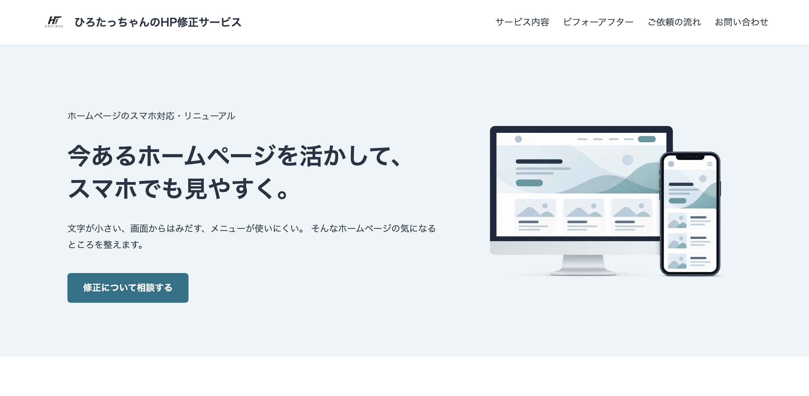
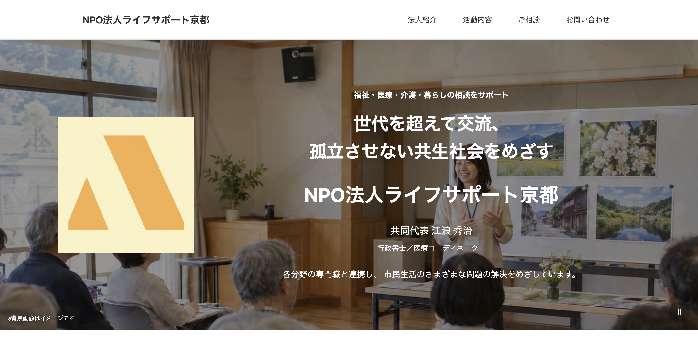
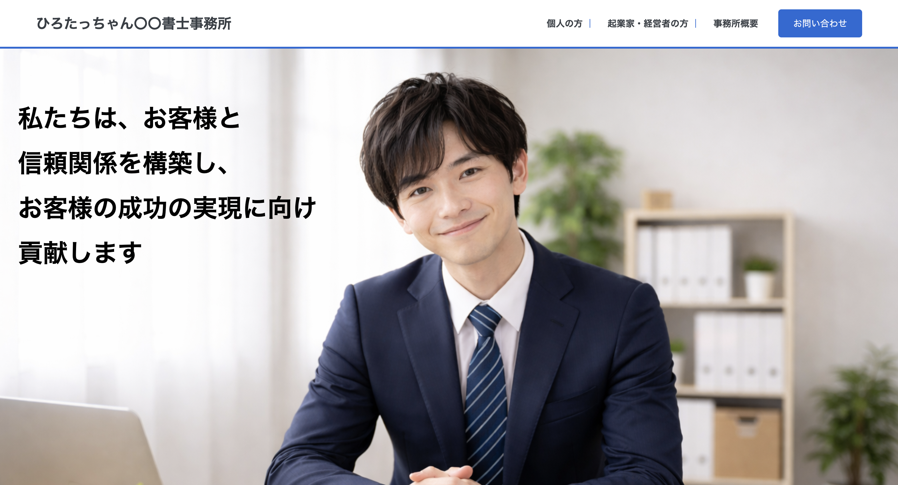
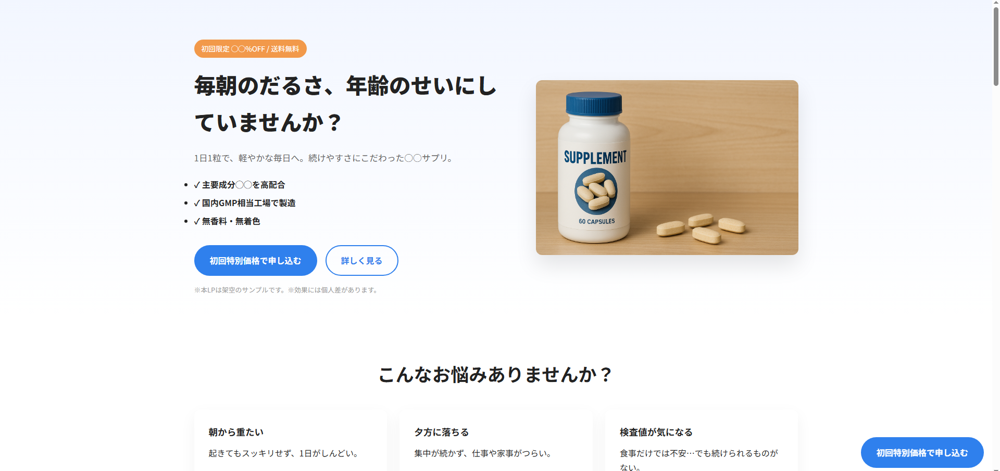
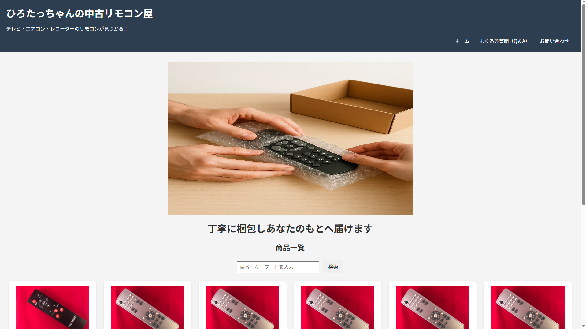
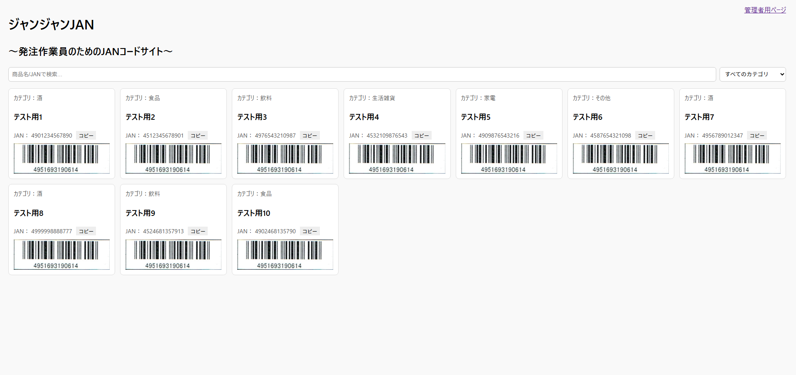
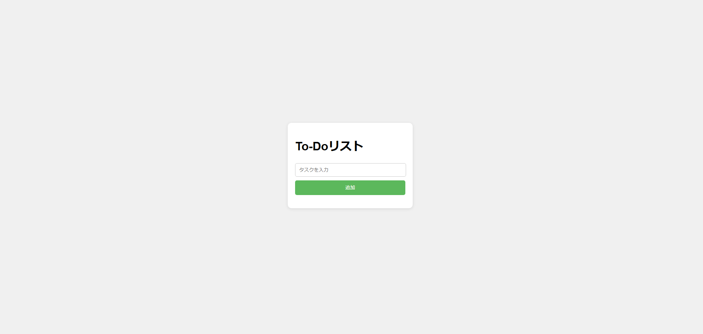
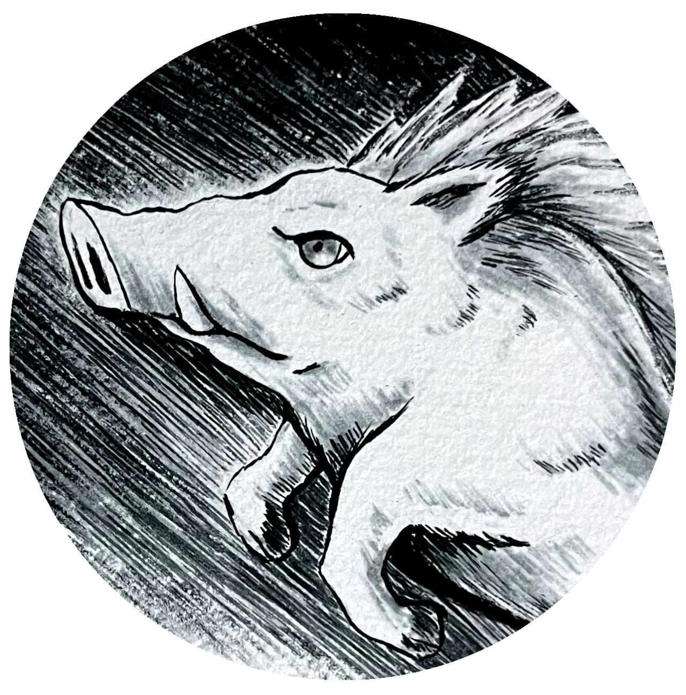
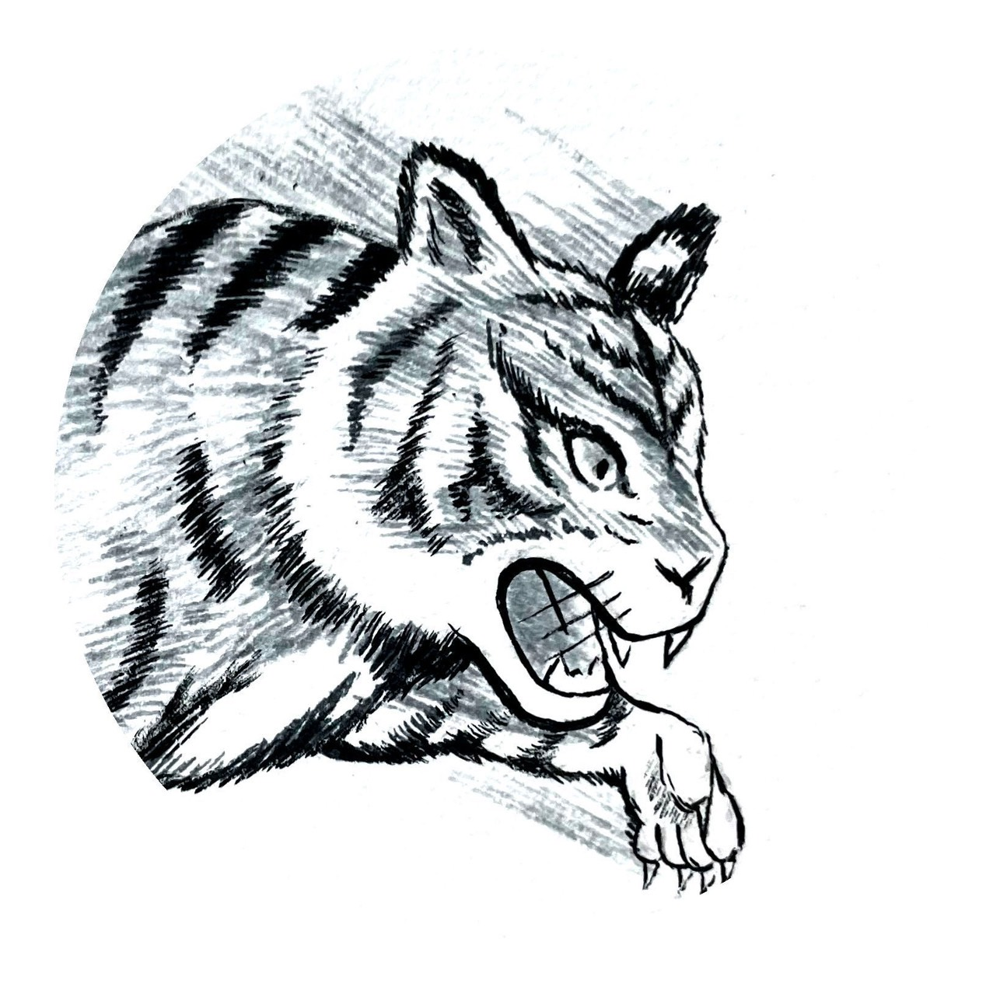

自社サービス紹介サイト
HP修正サービス
制作目的： 古いホームページをスマートフォンでも 見やすくする修正サービスを紹介し、 ご相談につなげるために制作しました。
工夫した点： 見本サイトの修正前と修正後を並べ、 PC表示とスマートフォン表示を 切り替えて比較できるようにしました。 修正による違いを、実際の画面で確認できます。
使用技術：HTML / CSS / JavaScript
サイトを見る →ホームページ修正のご相談
スマートフォンで見づらい、文字や画像が読みづらいなど、
お使いのホームページのお悩みをご相談ください。

自社サービス紹介サイト
制作目的： 古いホームページをスマートフォンでも 見やすくする修正サービスを紹介し、 ご相談につなげるために制作しました。
工夫した点： 見本サイトの修正前と修正後を並べ、 PC表示とスマートフォン表示を 切り替えて比較できるようにしました。 修正による違いを、実際の画面で確認できます。
使用技術：HTML / CSS / JavaScript
サイトを見る →
ホームページ制作
制作目的: ご依頼者様から「名刺がわりの簡単なHPを作成して欲しい」 との依頼を受け作成。
工夫した点: ご依頼者様から頂いた資料から情報を抜粋・集約し、 見てわかりやすく配置。また、名刺から全体のカラーイメージや、 ロゴを抜き出しサイトに反映させました。
使用技術:HTML / CSS
サイトを見る→
ホームページ制作
制作目的: 書士職向けのウェブサイトを作成し、 サービスの紹介とお問い合わせ機能を備えたサイトを制作すること。
工夫した点: ユーザーの利便性を高めるために、 簡単なお問い合わせフォームとFAQセクションを追加した。
使用技術:HTML / CSS /JavaScript
サイトを見る→
LP制作
制作目的: サプリメント商品の魅力を伝える ランディングページを作成し、 ユーザーの購買意欲を高めること。
工夫した点: 共感を呼ぶ悩み訴求、商品の特徴を明確に示すセクション分け、 CTAボタンの配置でコンバージョンを意識。レスポンシブデザイン。
使用技術:HTML /CSS /JavaScript
サイトを見る→
ショップサイト制作
制作目的: 中古リモコンを販売するショップのウェブサイトを作成し、商品の検索と表示機能を備えたサイトを制作すること。
工夫した点: 商品データをJSONファイルから読み込み、 検索機能を実装してユーザーが簡単に商品を探せるようにした。
使用技術:HTML / CSS /JavaScript /JSON
サイトを見る→
業務支援ツール
制作目的： 発注作業員がJANコードで商品を素早く検索できるサイトを作成し、 業務効率を向上させること。
工夫した点： 管理者用ページで商品データを管理し、JSON形式でエクスポートしてメインページで読み込む仕組みを実装。 検索機能とカテゴリフィルタを追加。
使用技術 : HTML / CSS / JavaScript / JSON
サイトを見る→
Webアプリ制作
制作目的: 日常のタスク管理を助けるシンプルなTo-Doリストアプリを作成し、 JavaScriptの基本的な操作を学ぶこと。
工夫した点: ローカルストレージを使用することでデータを永続化し、 ページリロード後もタスクが残るようにした。追加、削除機能を直感的に操作可能。
使用技術 : HTML / CSS / JavaScript(localStorage)
アプリを見る→ブラウザで遊べるオリジナルゲームを制作しています。 気になるゲームを選んで、遊んでみてください。
製品版販売中
お店を建て、一か月ずつ商店街を育てていく 建設・経営シミュレーションゲーム。 あなたの手で、にぎわいのある街をつくりませんか。
体験版では、マスコット誕生まで遊べます。

「ひろたっちゃん」の営業・受付を担当しています。 ホームページの新規制作や修正について、 ご相談を承ります。
お客様のお困りごとやご希望を丁寧に伺い、 制作担当の弟と連携しながら、ご相談から制作までをサポートします。

ひろたっちゃんの制作担当です。調理師として働きながら、 Web制作に取り組んでいます。
2024年からProgate等でHTML/CSS/JavaScriptを学び、
ウェブ制作のスキルを習得しています。
現在は、個人事業主や小規模事業者向けに、
シンプルで見やすいホームページの制作を提供しています。
ご依頼いただいたお客様に喜んでいただけるようなサイトを
制作することを目標としています。
ウェブ制作を通じて、
シンプルで使いやすいサイトをお届けします、
主なスキルとサービスは以下の通りです。
・ホームページ制作
・スマホ対応（レスポンシブ）
・HTML/CSS/JavaScriptでの制作
・簡単な動き（ボタン・メニュー）
CONTACT
ホームページの新規制作や修正について、お気軽にご相談ください。
お問い合わせフォームへ